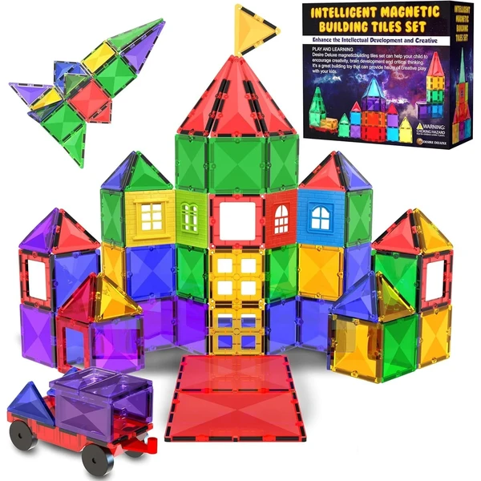
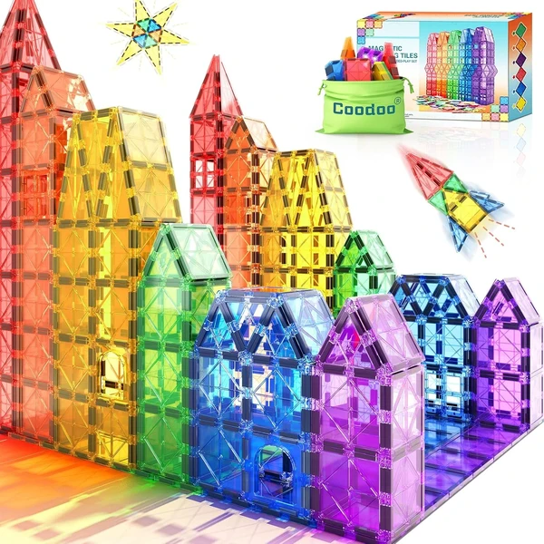
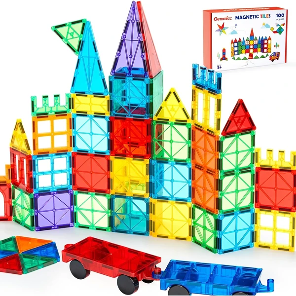
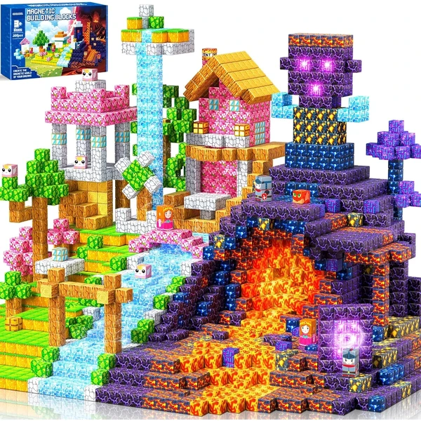
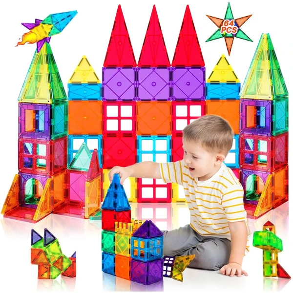

Los juegos de construcción son uno de los juguetes educativos más recomendados a partir de los 3 años, cuando el niño ya encaja bloques con intención y empieza a planificar lo que quiere montar. Bloques grandes, piezas de madera, encajables o sets magnéticos comparten una misma virtud: son un juego abierto, sin una única forma correcta de jugar, que acompaña durante años y se adapta al ritmo de cada niño. En esta selección encontrarás construcciones pensadas para manos de 3 años, seguras y fáciles de manipular.
¿Qué desarrollan los juegos de construcción?
Uno de los juguetes más completos: mientras juega, el niño pone en marcha varias capacidades a la vez.
- Pensamiento lógico
- Creatividad
- Motricidad fina
- Coordinación mano-ojo
- Visión espacial
- Resolución de problemas

Mega Bloks Bolsa clásica con 60 bloques de construcción
Una bolsa con 60 bloques grandes de colores vivos y formas especiales, pensada para manos pequeñas. Incluye su propia bolsa para guardar todas las piezas.
⭐ ¿Por qué nos gusta?
- ✔ 60 bloques de colores y formas variadas.
- ✔ Tamaño grande, fácil de encajar.
- ✔ Bolsa incluida para recoger y guardar.
💬 Lo que más destacan las familias
Muchos padres coinciden en que las piezas grandes son perfectas para las manos todavía torpes de los más pequeños, que consiguen encajarlas solos sin frustrarse. También se agradece que aguanten bien el paso de los hermanos pequeños que van heredando el juego.
Ver en Amazon

LEGO Duplo Caja de Ladrillos
Una caja de almacenamiento con ladrillos numéricos, un coche con ruedas móviles, dos figuras y piezas variadas para el juego libre, con 15 ideas de construcción incluidas para empezar.
⭐ ¿Por qué nos gusta?
- ✔ Incluye coche, figuras y ladrillos numéricos.
- ✔ 15 ideas de construcción para arrancar el juego.
- ✔ La propia caja sirve para guardar las piezas.
💬 Lo que más destacan las familias
Los compradores valoran especialmente que el coche y las figuras inviten a inventar historias además de construir, así el juego no se queda solo en apilar piezas. La caja que sirve para recoger todo también se menciona a menudo como un acierto.
Ver en Amazon

Desire Deluxe Bloques Magnéticos translúcidos
Un set de 57 piezas magnéticas translúcidas para construir torres, castillos y figuras en 3D, con imanes potentes que sujetan firmemente las estructuras. El diseño translúcido permite jugar también sobre una mesa de luz.
⭐ ¿Por qué nos gusta?
- ✔ 57 piezas translúcidas, aptas para mesa de luz.
- ✔ Imanes potentes, estructuras más estables.
- ✔ Bordes seguros y materiales duraderos.
💬 Lo que más destacan las familias
No es raro encontrar comentarios sobre lo bonito que queda el efecto de luz cuando las piezas se colocan junto a una ventana, algo que sorprende a los niños las primeras veces. La firmeza de los imanes también da tranquilidad a la hora de construir torres más altas.
Ver en Amazon

Coodoo Bloques Magnéticos 40 piezas
Un set inicial de 40 piezas magnéticas de formas y colores del arcoíris, con un tamaño de base estándar compatible con otras marcas de piezas magnéticas. Incluye bolsa de almacenamiento.
⭐ ¿Por qué nos gusta?
- ✔ Tamaño estándar, compatible con otras marcas.
- ✔ Set inicial ideal para empezar la colección.
- ✔ Bolsa incluida para guardar las piezas.
💬 Lo que más destacan las familias
Se repite bastante el comentario de que es un buen punto de partida antes de lanzarse a sets más grandes, y que las piezas encajan bien con las de otras marcas. Los niños suelen entretenerse solos probando distintas formas sin que haga falta ayuda.
Ver en Amazon

Gemmicc Baldosas Magnéticas con Coches
Un set de 98 baldosas magnéticas más 2 coches magnéticos, pensado para construir tanto estructuras estáticas como circuitos y garajes por los que hacer rodar los coches incluidos.
⭐ ¿Por qué nos gusta?
- ✔ Incluye 2 coches magnéticos para combinar el juego.
- ✔ 98 piezas, suficientes para estructuras grandes.
- ✔ Imanes potentes para construcciones más altas.
💬 Lo que más destacan las familias
Entre los comentarios más habituales aparece lo mucho que gusta poder construir garajes y pistas para los coches incluidos, en vez de limitarse a apilar piezas. Es de los sets que más rato mantiene entretenidos a los niños que ya se aburren de construir sin más.
Ver en Amazon

COOLJOYA Bloques Magnéticos 300 piezas
Un set grande de 300 piezas magnéticas en 20 colores distintos, pensado para construcciones más ambiciosas en 2D y 3D. Los imanes de alta potencia ofrecen una adhesión firme y estable.
⭐ ¿Por qué nos gusta?
- ✔ 300 piezas en 20 colores, el set más grande de la lista.
- ✔ Imanes de alta potencia, adhesión firme.
- ✔ Bordes redondeados, seguros para manos pequeñas.
💬 Lo que más destacan las familias
Quienes lo han probado destacan que la cantidad de piezas da para construcciones mucho más grandes de lo habitual, algo que gusta especialmente si juegan varios niños a la vez. Los imanes potentes se mencionan como un punto fuerte frente a otros sets más básicos.
Ver en Amazon

Katiago Bloques Magnéticos 64 piezas
Un set de 64 piezas magnéticas 3D con líneas antirrayado que mantienen el color brillante, pensado para combinar formas geométricas y aprender sobre polaridad magnética y diseño arquitectónico.
⭐ ¿Por qué nos gusta?
- ✔ 64 piezas con diseño antirrayado.
- ✔ Incluye folleto de ideas para construir.
- ✔ Compatible con otros azulejos de tamaño similar.
💬 Lo que más destacan las familias
Una de las cosas más comentadas es que resulta un tamaño de set muy equilibrado, ni escaso ni excesivo, ideal para tenerlo siempre a mano. El folleto de ideas ayuda a que los niños arranquen a construir sin quedarse mirando las piezas sin saber por dónde empezar.
Ver en Amazon